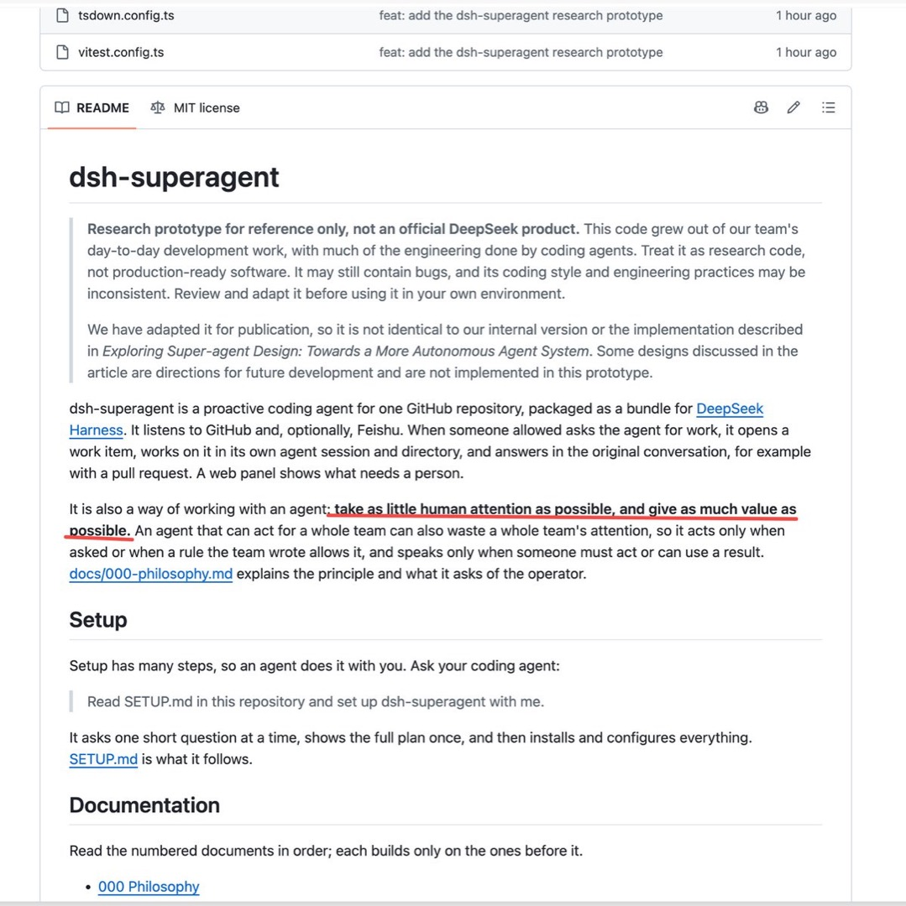
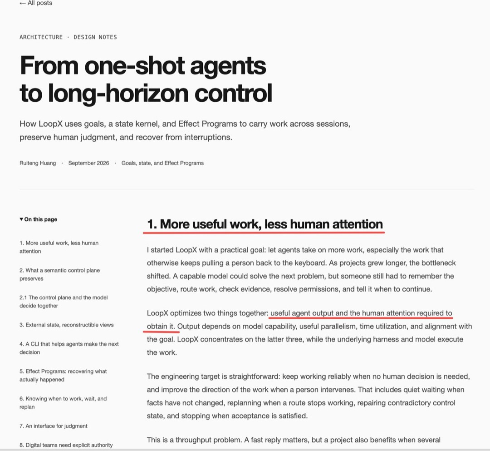
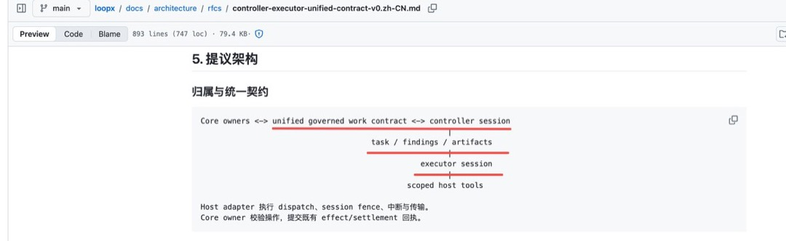
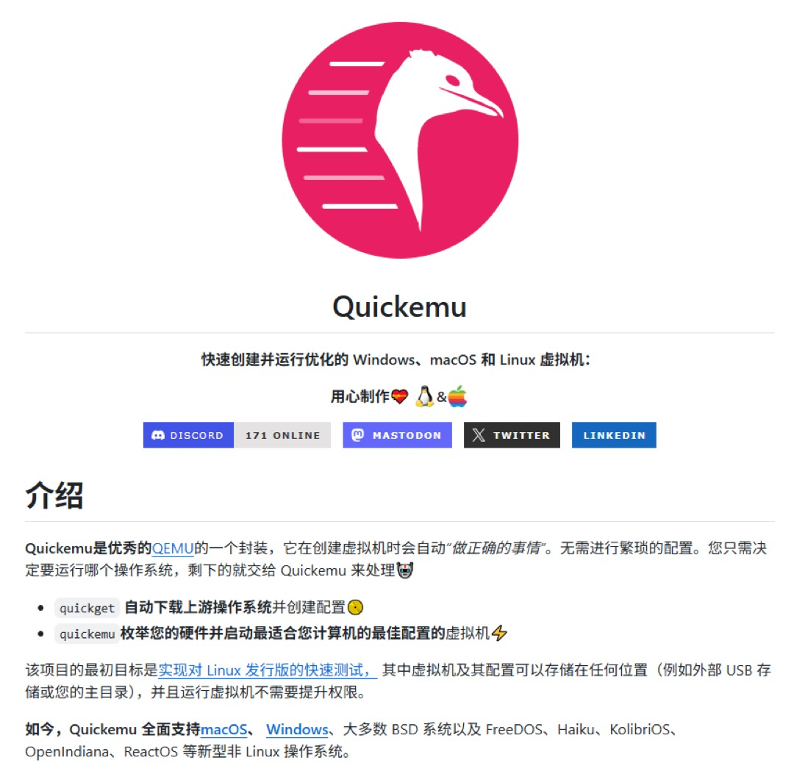
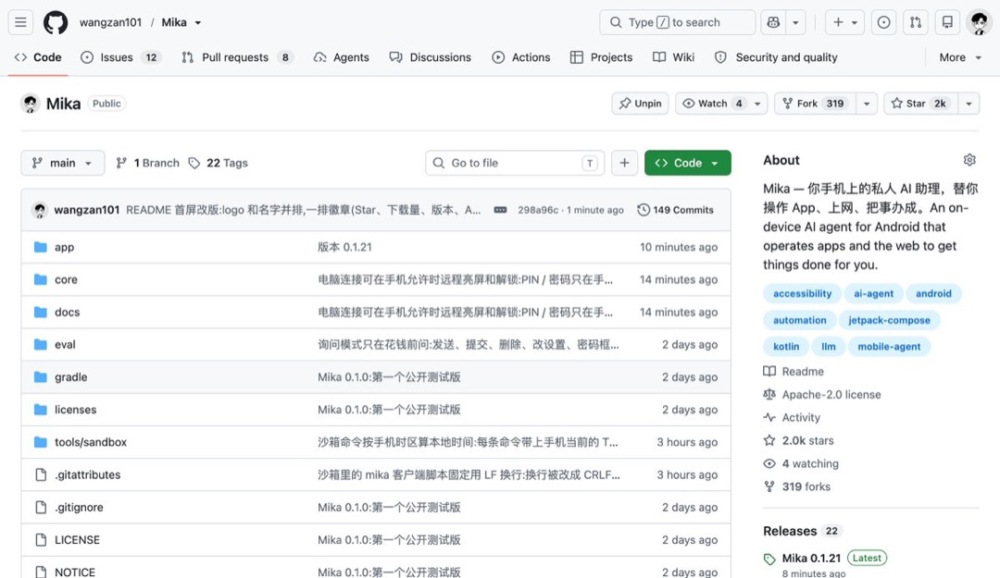
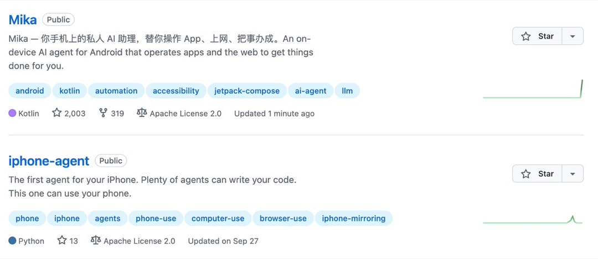

本期速览
01 AI制药扎堆已知靶点加剧研发内卷
02 长程Agent控制面与执行面分离成趋势
03 Quickemu一条命令创建虚拟机
04 黑客用44个AI Agent自动化攻击
05 Mika开源本地手机AI助手
01｜AI制药扎堆已知靶点加剧研发内卷
来源（X） · @Himalayas1989 · 2026-10-31 20:55
做药先得选靶点，就是药要去打的那个目标，像 PD-1、EGFR、KRAS 这些，早就被证明打中了有用。AI现在最拿手的，恰恰是照着这种已知目标快速设计新分子，所以一大批人涌过去，做出来的多是跟风药，行内叫 me-too 药。
这个行业本来就挤，Booth 说大约四分之一的研发项目集中在37个靶点上，AI一来，就变得更拥挤了。
临床试验差不多就是这个处境，新药做出来得找病人来试，符合条件的病人不会因为有了AI就变多，十几个项目盯着同一批人，招不满就只能拖，拖久了钱和耐心都耗光，Booth 说的浪费、招不到病人、失败率上升，基本都是从这儿来的。他觉得长期看AI可能会彻底改变做药这件事，消化不良是眼下的事。
https://x.com/LifeSciVC/status/2116135372967051496
引用内容
Bruce Booth @LifeSciVC
中文译文
AI药物丰产的果实：短期内的消化不良
虽然AI的长期影响很可能是变革性的，但在短期内，更多针对已知靶点的药物可能会加剧拥挤困境，拖累行业研发生产力
https://lifescivc.com/2026/10/the-fruits-of-ai-drug-abundance-indigestion-in-the-near-term/
原文
The Fruits of AI Drug Abundance: Indigestion In The Near Term
While the long term impact of AI is likely transformational, in the near term more drugs against known targets will likely exacerbate the crowding challenge dragging down industry R&D productivity
https://lifescivc.com/2026/10/the-fruits-of-ai-drug-abundance-indigestion-in-the-near-term/
02｜长程Agent控制面与执行面分离成趋势
来源（X） · @huangruiteng · 2026-10-31 22:16
当然，loopx 一定程度也是幸运的，因于我长期以来面向愿景的探索，和一些运气，在一个本不该出现的时间点出现，被更多人了解。loopx 有着独特的路线积累（完备的长程状态闭环设计）、独特的生态位（harness neutral long-horizon harness），期望持续投入、找到更多的 token 资源，发挥更大价值。
（我大概今年 2 月开始业余探索这条技术路线，loopx 的前世今生参考 https://x.com/huangruiteng/status/2093692269459296289）
引用内容
Ruiteng Huang @huangruiteng
这个目标只能说和 loopx 在 8、9 月 blog title 中 指出的 “More useful work, less human attention” 一模一样（见图片）。
更具体的：
1. 状态与 session 分离的思想，和 loopx 所走的路线一致；
2. 上下文组织，做了精细的效率和效果优化，loopx 近期也落地了 渐进式 & 压缩周期内差分上下文的优化，后者是基于结构化上下文体系的创新。
3. 将通用长程能力视作 personal agent 的基座，将 管家 or router 作为和用户交互、最小化注意力的接口，router 负责任务的 delegation。区别在于 loopx 有 per goal and per agent 的丰富的稠密状态信息，对 router or controller 的智能要求更高。
综合来看，目前通用长程任务的趋势，既要通过 semantic control plane 跑稳长程任务、提升效果，也要尽量将控制面的开销抽离出干活 session，避免损耗模型智能。
近期 loopx 有一个 control session and executor session 分离的 rfc，欢迎开发者参与。
RFC：https://github.com/loopx-project/loopx
loopx 9 月初 blog：https://loopx-project.github.io/loopx/blog/from-one-shot-agents-to-long-horizon-control/
deepseek 新仓库：https://github.com/deepseek-ai/dsh-superagent-prototype
deepseek 技术文章：https://mp.weixin.qq.com/s/zoS7GlReWPhfCjENGxXCdg
loopx：https://github.com/loopx-project/loopx
loopx 管家：https://github.com/loopx-project/loopx#personal-agents-teams-and-self-improving-workflows



03｜Quickemu一条命令创建虚拟机
来源（X） · @bkdgiffug · 2026-11-01 05:01
Quickemu省事，整套流程就压成一条命令。
1️⃣ quickget把系统镜像下好，配置文件顺手也生成出来
2️⃣ quickemu先探一遍硬件底细，再挑最合适的配置把虚拟机拉起来
Windows、macOS、Linux通吃，官方口径覆盖近1000种系统版本，Windows 11的TPM 2.0都替你想到了，自己不用动手折腾。
试发行版、玩冷门系统，一条命令搞定，管理员权限都不用，塞进U盘照样跑。
懒人福音，Linux老哥可以冲一波。
🔗 链接：https://github.com/quickemu-project/quickemu

04｜黑客用44个AI Agent自动化攻击
来源（X） · @mylifcc · 2026-10-31 12:30
💥 真相1：真有黑客拿 44 个 AI 当“全自动打工人”
其中一个团伙直接把开源工具（CyberStrikeAI）改成了黑客流水线，一共跑了 44 个 AI Agent 分工干活：有的负责踩点、有的验证漏洞、有的偷数据、有的写总结报告，甚至还能自动生成地道的日文钓鱼网页！一口气扫了 19 家机构，全程几乎不用人管。
💥 真相2：AI 不仅当枪使，自己也成了猎物
另一个团伙是“老手+AI军师”模式，一口气扫了 6000 多个日本 IP。他们不仅偷传统企业数据，还专门盯着企业暴露在公网上的 AI 推理服务和 GPU 算力集群下手——用 AI 去偷别人的 AI，主打一个闭环。
💥 真相3：没有科幻片里的 0-day 神技，全靠“忘锁门”
这才是最扎心的！研究人员翻遍了黑客后台，发现这几波攻击一个 AI 挖出来的新漏洞（0-day）都没有！
那黑客是怎么得手的？全靠企业自己把管理后台裸奔在公网上、用着十年前的老旧 Web 系统、或者把密码明文写在配置文件里（比如日本遍地都是的雅马哈路由器）……
说白了：AI 确实把黑客撬门的速度提升了 100 倍，但被偷的依然是那些连门都不锁的人。
05｜Mika开源本地手机AI助手
来源（X） · @wangzan101 · 2026-10-31 19:09
Mika是一个跑在你手机上的AI诸侯，一句话交给他，他在一块独立的命上帮你操控app、上网、把事干完。
想到，就能做到！目前他能做的事包括但不限于下面这些：
1、操控任何app：你使用的app他都能操控，发微信，看小红书、发推特、看广告领VIP、打游戏刷金币……
2、在网页上帮你把活干完：搜索、抓取内容、填写表单，你在网页上的操作，他依旧都行，模仿人的痕迹，大幅度减少被风控。
3、悬浮胶囊：随时随地，在任何app里，想到就能唤起Mika，分析当前屏幕，或者让他去帮你把干活
4、同时内置Linus沙箱，他也能帮你跑脚本，处理文件 他干活的时候你照样用你的手机，互不打扰，无需root，不用电脑，纯本地运行，复用你本地的app和网页登录态干活。
发布后得到了，很多朋友的反馈，群里、GitHub、推特上，每时每刻都有人在认真反馈问题，提交修复，因为你们，Mika才会更好。
经过48小时的开发，目前已新增下面的功能，更多功能也正在赶来的路上：
1、自学习：操控的app和网页，做过的事，他会总结到知识库，每一次都比上次更快更稳，越用越好用
2、MCP支持：现在已经支持在你电脑上的Agent下调用Mika帮你干活，锁屏也能轻松唤醒，想到，就能做到
3、更多的知识库，通过内置知识库app.md、site.md，Mika在对应的网站上能更快的把活干好，正在添加更多的内容
拟人操作、插话打断、授权登陆、多语言支持、更多的机型适配……
接下来，让我们一起把Mika做好，不管你是开发者还是用户，都欢迎加入，遇到问题提 issue，有想法提 PR。
一起把手机上的 AI 助理做好，再次感谢大家的支持🙏


引用内容
王赞 @wangzan101
一句话交给它，它就能在你手机上把事干完。
复用你现有的登录态，不用额外授权，也不用 Root，更不用电脑。
你继续玩手机，它在后台干活，互不干扰。干完了通知你，你也可以随时随地再丢任务给它。
他能干什么？
1、操作你手机上的任何 App：发微信、总结群聊、小红书总结博主内容，在 BOSS 直聘批量打招呼、订闹钟、改设置，手机上的 App 都能操作，不用事先适配
2、内置浏览器：强大的 Browser use，搜索、筛选、读网页、批量操作，帮你把事干好的同时，节奏像真人一样，不容易被风控
3、悬浮胶囊：在任何 App 里都能随时呼起，和它对话，叫它干活，或者把这一屏发给它，问这个怎么回、帮我记下来
4、本地 Linux 沙箱：跑 Python、处理你发来的文件、Agent 写的脚本
不要 root，无需电脑，就跑在你的安卓手机上，真正的 phone Agent，替你在手机上把事都干了。
更多功能正在赶来的路上。
欢迎 star，下载使用，感兴趣也可以一起开发。
Github 地址：https://github.com/wangzan101/mika
06｜MUSE生成逼真AI网红视频
来源（X） · @Crypto_146827 · 2026-11-01 01:54
5块钱买了个号，刚生成了一把，狠狠被震撼到！
已经分辨不出真假了，Meta存了大量的ins美女的数据，
网感超越了Seedance2.0
我已经开始起新号做抖音了！
提示词↓↓↓
引用内容
Lin数字资产 ( 长期版 ) @Crypto_146827
赚钱可以像呼吸一样简单吗？？？
抖音这个童童子博主，拿Muse生成127个分不清真假的美女擦边视频，
发到抖音上，
三个月时间涨了109w粉...
然后开通了专属付费会员，98元一个月，一堆没见过世面，找不到资源的老光棍猛猛付费！
目前有2300人付费，差不多20w rmb一个月了😱😱😱😱😱